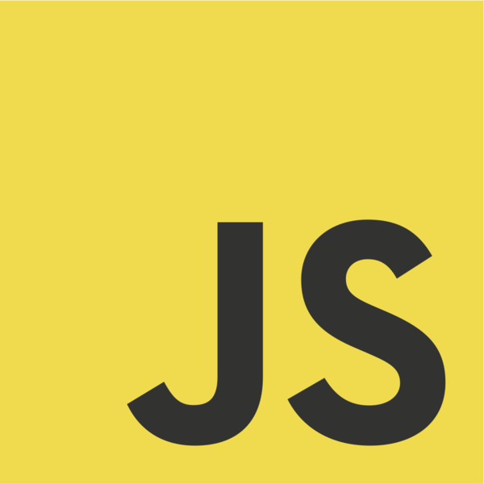
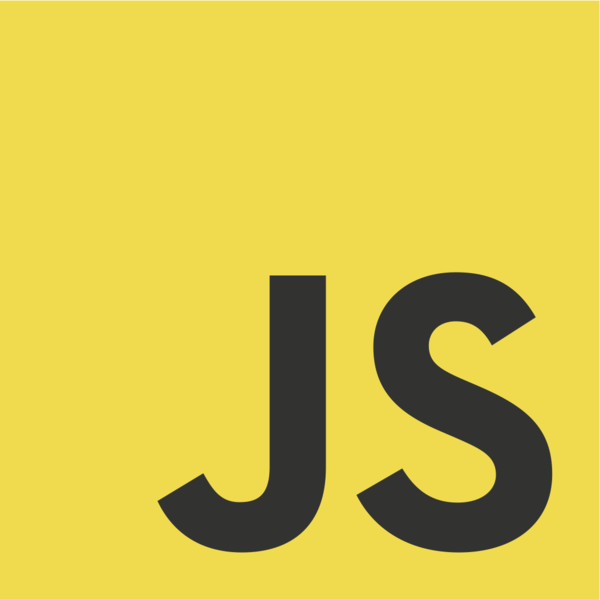
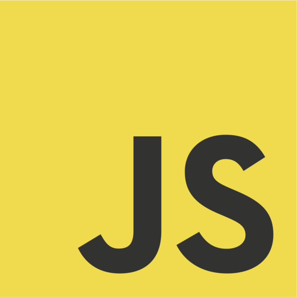

Skills


 



Hello, I'm
Welcome to my portfolio!
I am a
Passionate, quick-learning Computer Science & Engineering Grad. I strive to upgrade myself through
continuous learning process.
Explore the profolio to get to know more about my work, projects and
skills.
LEARN - PRACTICE - DEVELOP

© 2023 DILIP KUMAR B K. All rights reserved.
Email: sudheer0418@gmail.com